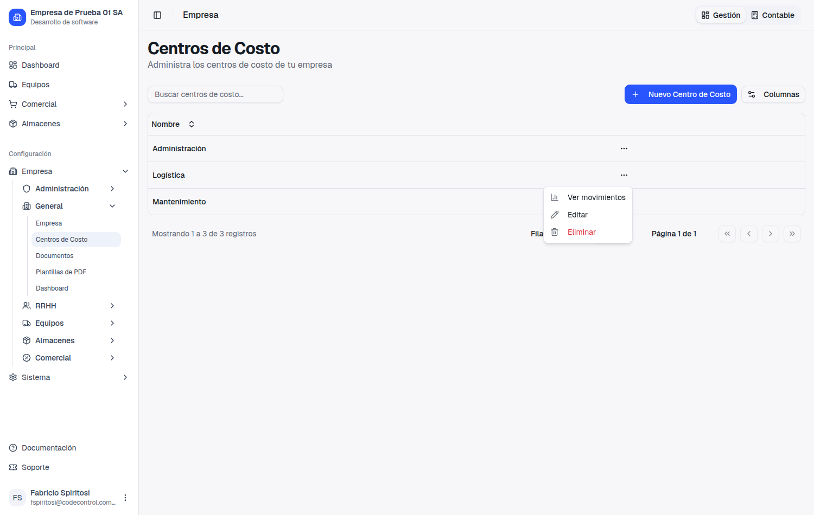
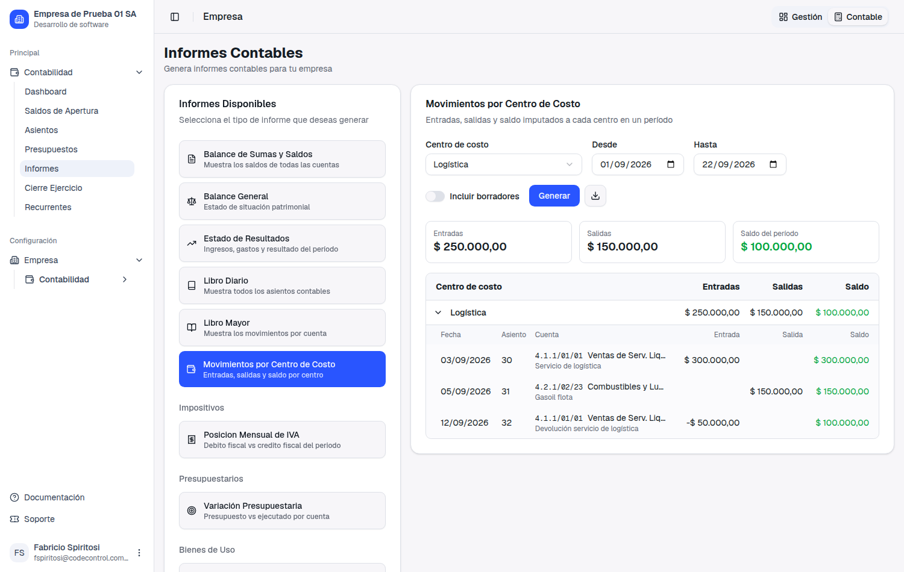
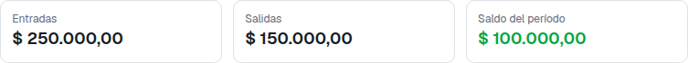
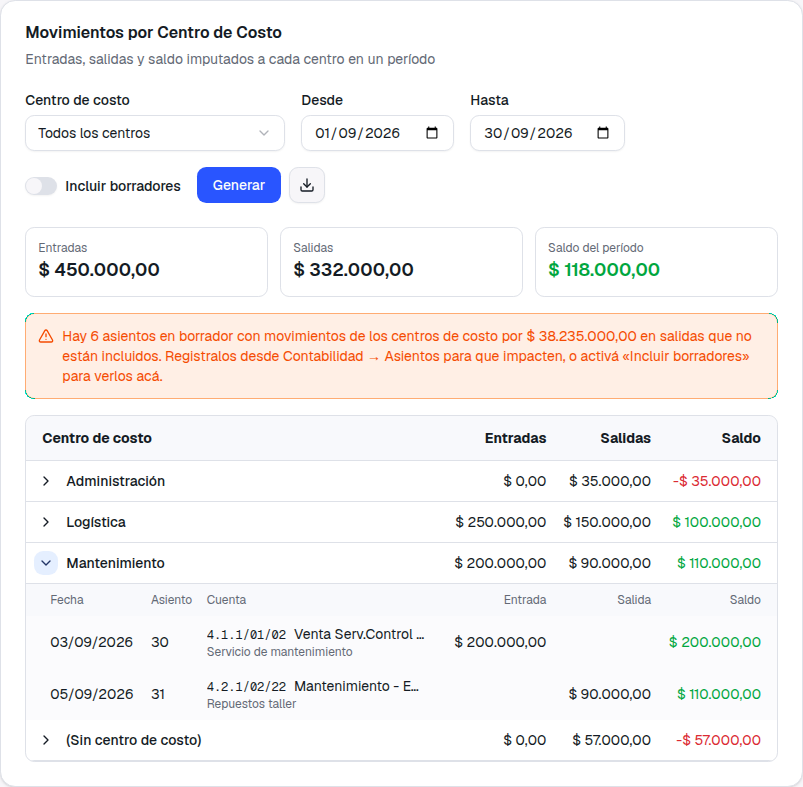
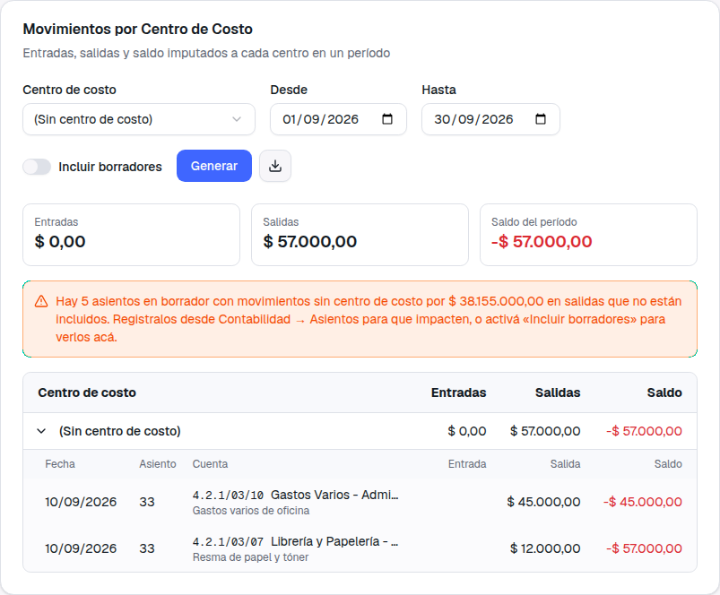
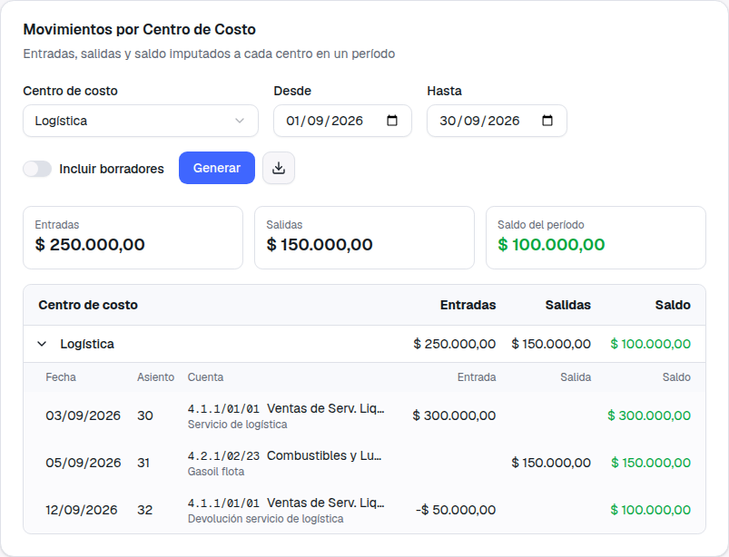
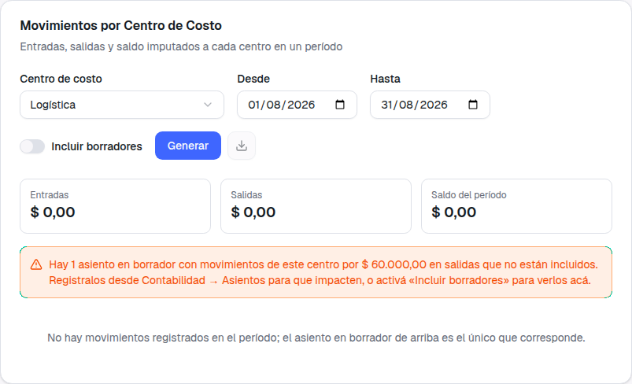
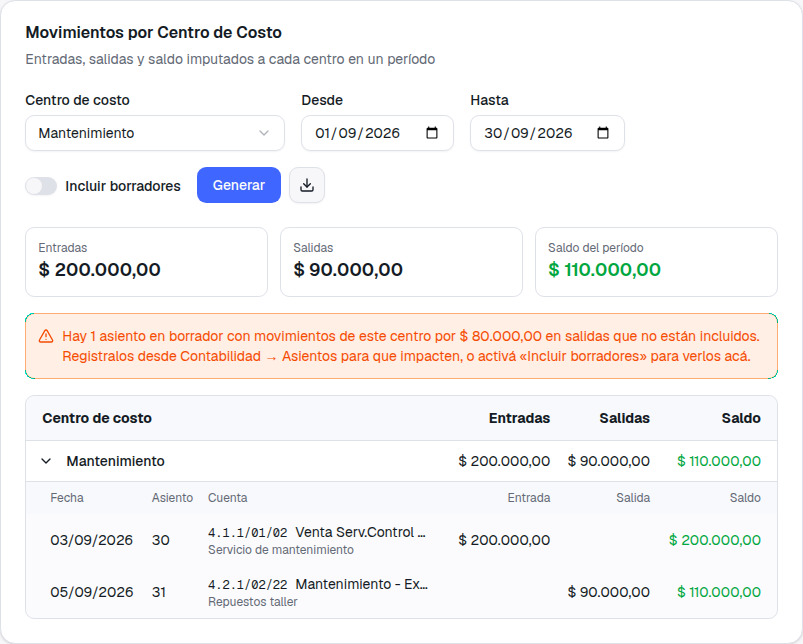
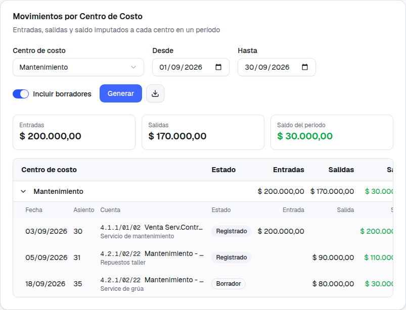

Entradas y salidas por centro de costo
Guía de presentación — qué pediste, dónde está el informe nuevo, cómo se lee, qué cuenta como entrada y como salida, y qué todavía no se imputa a un centro
1. Qué pediste
Hasta ahora los centros de costo estaban a mitad de camino. Los podías crear, podías repartir cada línea de una factura entre varios centros por porcentaje (eso lo entregamos en el ticket 583), podías asignarle un centro a un empleado o a un equipo… y después no había ningún lugar donde ver qué se le imputó a cada uno. El dato se guardaba y no se podía leer: la pantalla de Empresa → Centros de Costo era una lista de nombres y nada más, y ningún informe contable miraba el centro de costo.
Antes
Cargabas el centro de costo en la factura y ahí moría. Para saber cuánto le entró y cuánto le salió a “Logística” había que abrir los asientos uno por uno, o pedirlo por fuera del sistema.
Ahora
Un informe nuevo, Movimientos por Centro de Costo, con las entradas, las salidas y el saldo de cada centro en el período que elijas, el detalle movimiento por movimiento y exportación a Excel.
2. Dónde está
El informe vive con los demás informes contables, que es donde vas a querer cruzarlo contra el Libro Mayor:
Contabilidad → Informes → Movimientos por Centro de Costo
Y además tiene un atajo: en Empresa → Centros de Costo, el menú de los tres puntos de cada centro ahora tiene Ver movimientos. Hacés clic y se abre el informe ya filtrado por ese centro y ya consultado, sin que tengas que elegir nada.


Una cosa a tener en cuenta con el atajo
El atajo abre el informe con el mes en curso. Si el movimiento que buscás es de un mes anterior vas a ver ceros: cambiá Desde y Hasta y apretá Generar.
3. Cómo se lee
Elegís el centro de costo, el período y apretás Generar. Arriba siempre ves las tres tarjetas del período: Entradas, Salidas y Saldo (entradas menos salidas; en verde si el centro aporta, en rojo si consume).

El selector de centro tiene tres modos:
Un centro: el detalle, con saldo acumulado
Movimiento por movimiento, en orden de fecha: fecha, número de asiento, cuenta, el detalle de la línea, cuánto entró, cuánto salió y cómo va quedando el saldo acumulado fila por fila.

Todos los centros: la comparativa
Una fila por centro con sus entradas, sus salidas y su saldo, para responder de un vistazo cuál aporta y cuál consume. Cada fila se despliega con la flecha de la izquierda y muestra su propio detalle, con su saldo acumulado arrancando de cero.

(Sin centro de costo): lo que quedó sin imputar
Los ingresos y los gastos que no tienen ningún centro asignado. Es el control que te dice qué se está escapando del análisis por centro: si esa cifra es grande, hay facturas que se cargaron sin repartir.

4. Qué es entrada y qué es salida
Esta es la parte que conviene leer despacio, porque es lo que hace que los números cierren.
Entrada y salida no se deciden por el Debe y el Haber, sino por el tipo de cuenta. Si la línea va a una cuenta de ingresos, es una entrada del centro. Si va a una cuenta de gastos, es una salida. Y el saldo del centro es entradas menos salidas.
¿Por qué importa la distinción? Por las notas de crédito. Cuando le hacés una nota de crédito a un cliente, contablemente eso va al Debe de una cuenta de ventas. Si el informe mirara solo el Debe y el Haber, esa devolución aparecería como una salida del centro —como si fuera un gasto— y el centro quedaría con más entradas y más salidas de las que tuvo. Lo que hace el informe es lo correcto: la deja del lado de las entradas, en negativo, restando.

Cuadra con el Libro Mayor
Lo verificamos cuenta por cuenta: para cada cuenta de ingresos o gastos, lo que muestra el Libro Mayor es igual a la suma de todos los centros más la fila (Sin centro de costo). Nada se pierde y nada se cuenta dos veces.
5. Los asientos en borrador
Este es el mismo tema que te contamos en los tickets 717 y 721. Vale la pena repetirlo una vez más, con calma, porque es lo primero que te va a pasar con este informe.
Cuando confirmás una factura, el sistema genera el asiento contable pero lo deja en Borrador. Un asiento en borrador todavía no es contabilidad: no suma en el Libro Mayor, no suma en el Balance y no suma en este informe. Recién cuenta cuando alguien lo registra desde Contabilidad → Asientos. Es a propósito: le da a tu contador la última palabra antes de que algo entre a los libros.
Por eso puede pasar que cargues todo bien y el informe te muestre ceros. Para que eso no parezca un error, el informe te lo dice: cuando en el período quedan asientos en borrador que tocan lo que estás consultando, aparece un aviso naranja con cuántos son y por cuánto.

Tenés dos caminos, y son distintos:
-
Registrar los asientos (lo que hay que hacer). Andá a Contabilidad → Asientos, buscá los que están en Borrador y usá Registrar en el menú de cada uno. A partir de ahí el movimiento cuenta en este informe, en el Mayor y en el Balance, igual que para todo el resto del sistema.
-
Activar “Incluir borradores” (para mirar, no para cerrar). El switch de arriba suma los borradores al informe y agrega una columna Estado que marca cada línea como Registrado o Borrador. Sirve para ver cómo va a quedar el centro cuando se registre todo; no reemplaza al paso 1, y esos números no van a coincidir con el Libro Mayor.


Si el aviso te muestra una cifra enorme
En Todos los centros el aviso suma todos los borradores del período, incluidos los que no tienen centro asignado. Si en tu empresa hay asientos viejos sin registrar, la cifra va a ser grande. No es un error del informe: es el tamaño real de lo que falta registrar.
6. Qué imputa centro de costo hoy, y qué no
Esto es importante para que no busques en el informe algo que todavía no va a aparecer. El informe muestra fielmente lo que el sistema imputa a un centro de costo, y hoy eso son las facturas de venta y de compra. Nada más.
| Movimiento | ¿Va al centro? | Detalle |
|---|---|---|
| Facturas de venta | Sí | Por el reparto por porcentaje de cada línea, o por el centro por defecto del artículo |
| Facturas de compra (y sus notas de crédito y débito) | Sí | Igual que las de venta |
| Movimientos de fondos (caja, bancos, transferencias) | Todavía no | Estos asientos se generan sin centro de costo. Si los buscás en el informe, no están: ni en el centro, ni en la fila (Sin centro de costo) cuando no son cuentas de ingresos o gastos |
| Amortización de equipos | Todavía no | |
| Recibos de cobro | Todavía no | |
| Órdenes de pago | Todavía no | |
| Egresos (gastos cargados a mano) | Todavía no | |
| Centro de costo del legajo del empleado | Es informativo | Queda en la ficha del empleado; no llega a ningún asiento. No hay liquidación de sueldos que lo lleve |
| Centro de costo de la ficha del equipo | Es informativo | Queda en la ficha del equipo; la amortización no lo usa |
En criollo: el centro Logística te va a mostrar el combustible facturado a ese centro, pero no el pago de ese combustible cargado como egreso, ni la amortización del camión, ni los sueldos del sector.
Lo anotamos como próxima mejora
Extender el centro de costo a los egresos y a la amortización de equipos es el paso siguiente natural, y lo dejamos anotado. Decinos cuál te sirve primero y lo priorizamos: no hace falta esperar a que estén todos.
También queda pendiente poder elegir el centro de costo al cargar un asiento manual: el sistema lo guarda si viene cargado, pero la pantalla de alta todavía no te ofrece el campo.
7. El Excel
El botón de descarga al lado de Generar baja lo que estás viendo a una planilla, con una hoja llamada Movimientos por Centro. Trae una fila por movimiento y una fila TOTAL por centro, con estas columnas:
Centro · Fecha · Asiento · Código · Cuenta · Descripción · Debe · Haber · Entrada · Salida · Saldo (y Estado si bajaste el informe con los borradores incluidos).
Debe y Haber están solo en el Excel, no en la pantalla: es ahí donde tu contador va a querer cruzar línea por línea contra el Libro Mayor, y en la pantalla ocupaban lugar sin agregar nada para el uso del día a día.